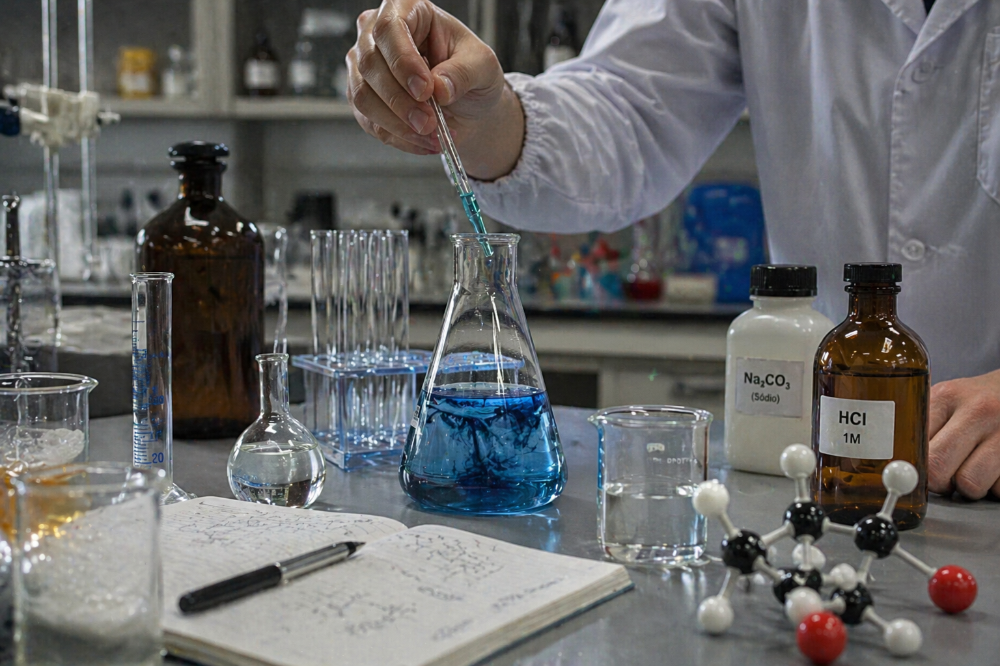

Química
Materia y transformaciones
La Química estudia de qué están hechos los materiales, cómo se organizan sus partículas y por qué cambian sus propiedades cuando mezclamos, calentamos, enfriamos o separamos sustancias.
Abrir índice de Química